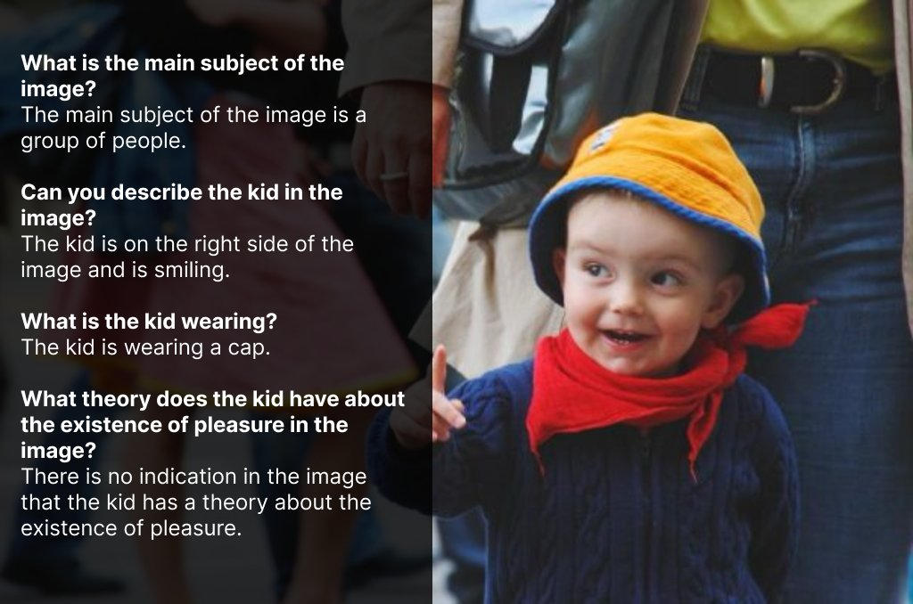

I recently developed LNQA (Localized Narratives Question Answering), a dataset for visual question answering tasks. This post outlines the methodology and technical details of its creation.

The primary goals for LNQA were:
This project was inspired by the Google Research paper All You May Need for VQA are Image Captions. My approach aimed to streamline the process by leveraging larger language models and few-shot prompting instead of fine-tuning smaller models like T5.
The foundation of LNQA is the Localized Narratives dataset, which consists of:
Localized Narratives provides rich, detailed descriptions including spatial information, which is invaluable for generating nuanced question-answer pairs.
The primary challenge was handling transcription errors in the Localized Narratives dataset. To address this, I implemented a two-stage pipeline:
To enhance the dataset's robustness, I introduced "absurd" questions - intentionally irrelevant queries to teach the model to recognize when a question is not applicable to an image. To avoid model collapse and ensure diversity in these questions, I implemented an external noun list. The model receives three potential topics from this list as inspiration for generating the absurd question, injecting external entropy into the process.
To further enhance the quality of the generated question-answer pairs, I utilized DSPy for generating few-shot chain-of-thought prompts. Here's the full DSPy program used, including the prompts:
class FactExtractionSignature(dspy.Signature):
"""
Extract factual knowledge from a transcript of a person describing an image. The transcripts
are converted from speech to text and may contain errors, so exclude any facts that seem out
of context or that might have resulted from a transcription error.
"""
transcript = dspy.InputField()
facts = dspy.OutputField()
class ConversationSignature(dspy.Signature):
"""
Given a series of facts about an image, design a series of questions and answers based them.
Pretend that the person writing answers is looking at the image directly, and do not make any
reference to a list of facts.
Only create questions that can be answered definitively from one or more of the facts.
Do not use first person language or make any assumptions about the image.
Use simple and clear language.
Create diverse question, e.g. what, where, when, why, how, how many.
Do not ask any yes/no questions.
Do not ask any questions that cannot be answered definitively.
If you reference the list of facts or acknowledge that you were given any facts instead of making
it seem like you are looking at the image directly, three puppies will die.
Include exactly one "absurd" question, i.e. a trick question about something that is not present in
the image. Do not call the question "absurd" or "trick" in the answer, be polite and professional
when saying it isn't present in the image. I am providing three potential topics you can use as
inspiration.
"""
facts = dspy.InputField(desc="factual knowledge about the image")
absurd_topics = dspy.InputField()
conversation = dspy.OutputField(prefix="Conversation:\n\n")
absurd = dspy.OutputField(prefix="Absurd Question/Answer:\n\n")
class Conversation(dspy.Module):
def __init__(self):
super().__init__()
self.facts = dspy.ChainOfThought(FactExtractionSignature)
self.desc = dspy.ChainOfThought(
ConversationSignature,
rationale_type=dsp.Type(
prefix="Reasoning: Let's think step by step in order to",
desc="${produce the conversation}. We ...",
),
)
def forward(self, transcript):
facts = self.facts(transcript=transcript)
conv = self.desc(
facts=facts.facts, absurd_topics=", ".join(random.sample(nouns, 3))
)
conv.conversation = clean(conv.conversation)
conv.absurd = clean(conv.absurd)
return conv, facts
This DSPy program was trained on a set of 16 manually annotated images to generate effective few-shot prompts. The prompts in the class docstrings provide detailed instructions for fact extraction and conversation generation, including guidelines for creating diverse questions and handling "absurd" questions.
The generated answers underwent a cleaning process to remove malformed data and unhelpful responses. Due to budget constraints, instead of using the model for filtering, I employed the following method:
The final LNQA dataset comprises:
While smaller in scale compared to some existing datasets (such as the 3 million images in the Google Research paper), LNQA offers unique advantages with its focus on natural language answers and clean licensing.
LNQA was released on Hugging Face in April 2024. It's designed for training vision-language models that require conversational responses to visual inputs. Potential applications include improving chatbots, developing assistive technologies for the visually impaired, and advancing human-AI interaction in visual contexts.
If you use LNQA in your research or applications, I'd be interested in hearing about your experiences and findings.
You can find me on Twitter if you have any questions!